Tridib grew up in a pious family among stories of yogis. At school, his attention drifted toward the birds outside the classroom. Music and sport were easier to pay attention to. That boyhood tug between contemplation and the world beyond the window gives the memoir its starting point.
Technology
From early Bitcoin to digital government
Tridib traces his discovery of Bitcoin to a sabbatical in Hawaiʻi around 2010–11. By December 2013, India’s first Bitcoin conference was drawing people to Bangalore to talk about how digital money might work in practice.
In 2018 he founded Sovereign Union to develop digital tools for Pacific island governments, including digital IDs, wallets, and land registries. In 2020, the company announced an early digital-currency pilot in Palau following a letter of intent from the Ministry of Finance.
His work now focuses on how public institutions and regulated issuers can design and govern digital currencies, including central bank digital currencies and stablecoins.
Cannabis took Tridib into a world of growers, entrepreneurs, and advocates. The photographs bring that part of the story down to earth, from working with the plant by hand to visiting a retail floor and meeting people at Bombay Hemp Company.
In the company of healers
Tridib’s interest in traditional medicine brought him into contact with healers around the world. In India, the photo archive takes us from the entrance of the Ministry of AYUSH to an Ayurvedic research division. The memoir will follow the people he met and worked with, and what they taught him about how knowledge is passed from one person to another.
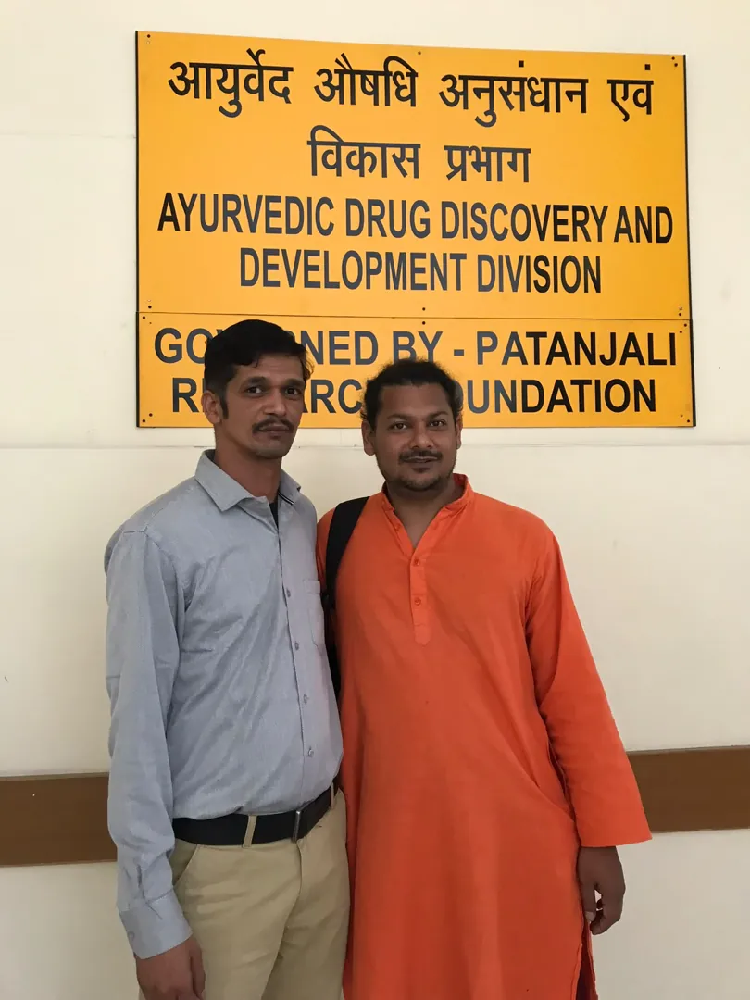
At an Ayurvedic drug discovery and development division
A life with music
Music was one of the things that held Tridib’s attention as a boy. He plays guitar and piano, and that love of making music found its way into his work. He co-founded Musiverse to explore how blockchain could help musicians raise money directly from their listeners.
On the road and in the air
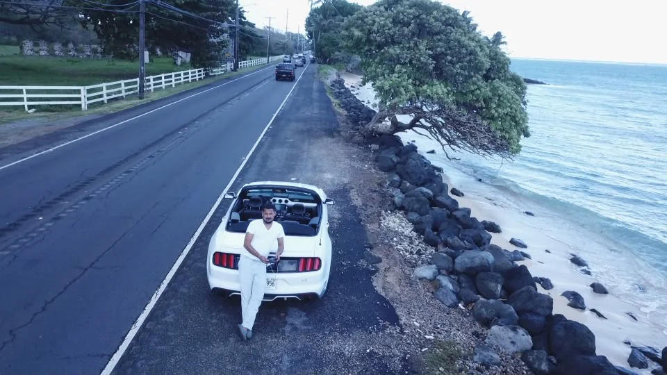
A stop along the coast
On the tarmacOn the helipad
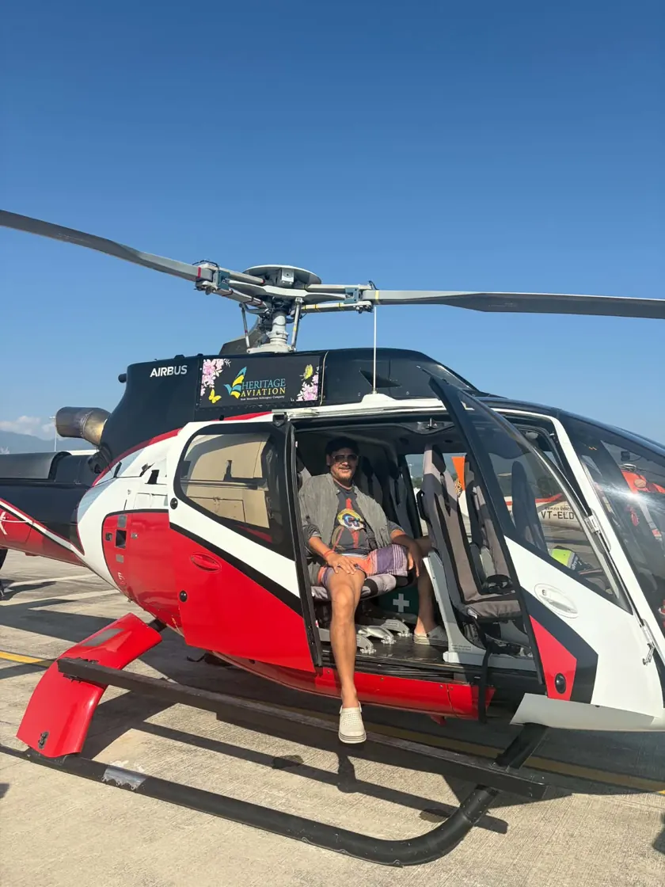
Ready for takeoff
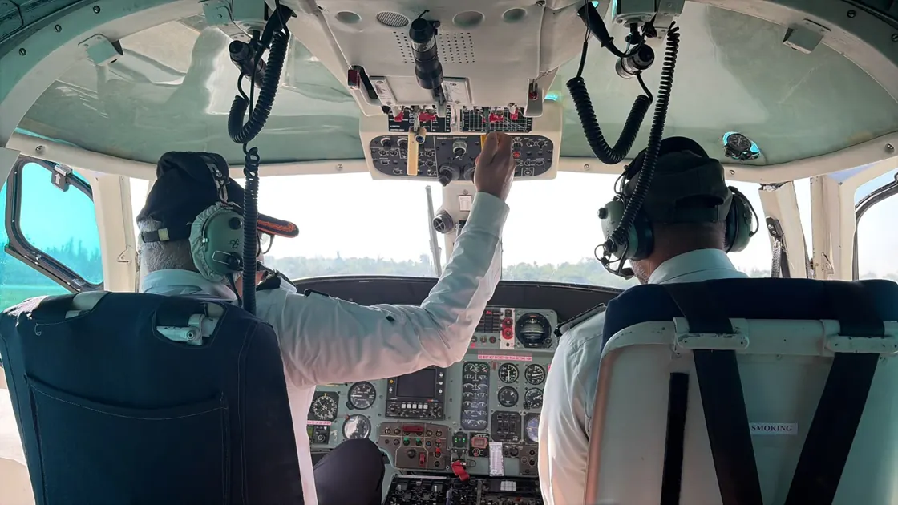
From behind the cockpit seats
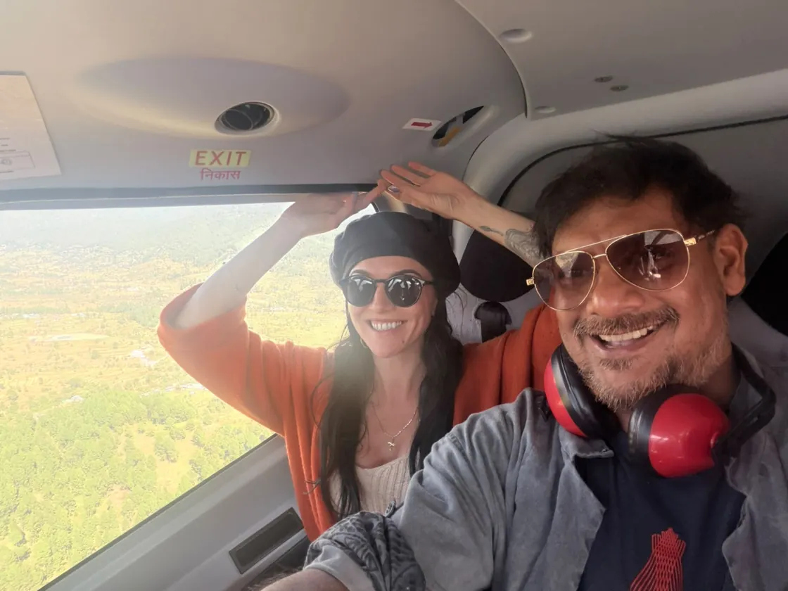
In flightKeepsakes from the road
Walking out to the helicopterA valley seen from the helicopter
From the photo archive
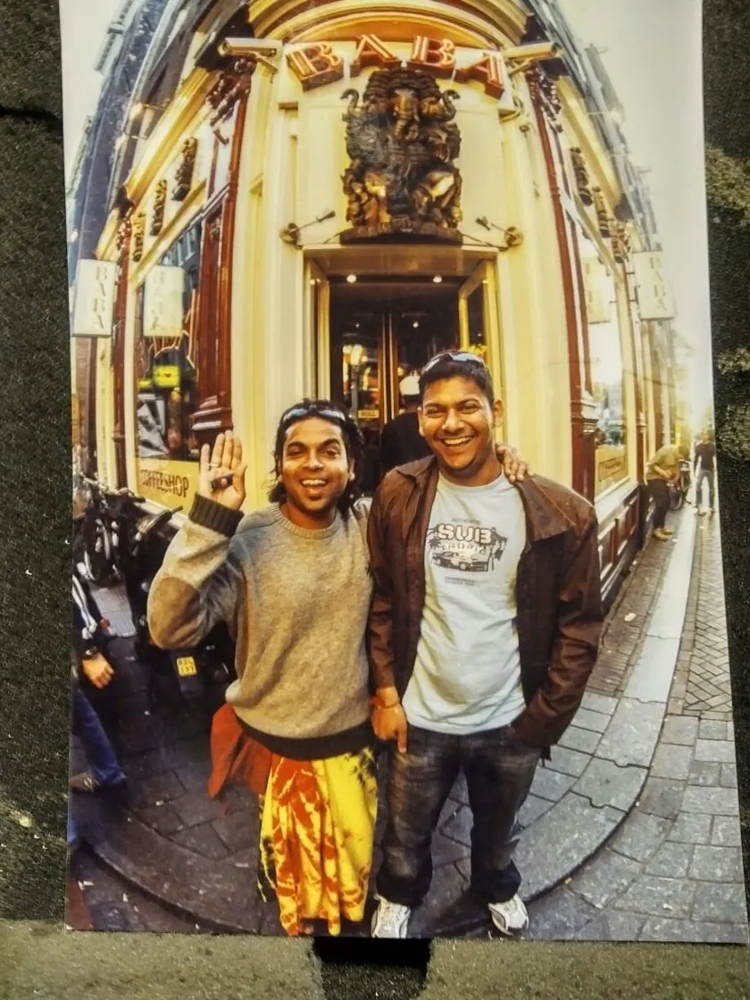
Outside Baba
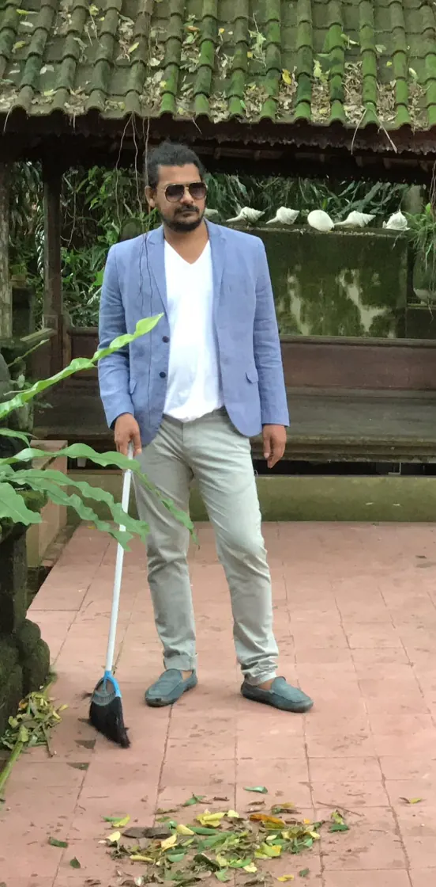
In the courtyardCannabis culture in Las Vegas
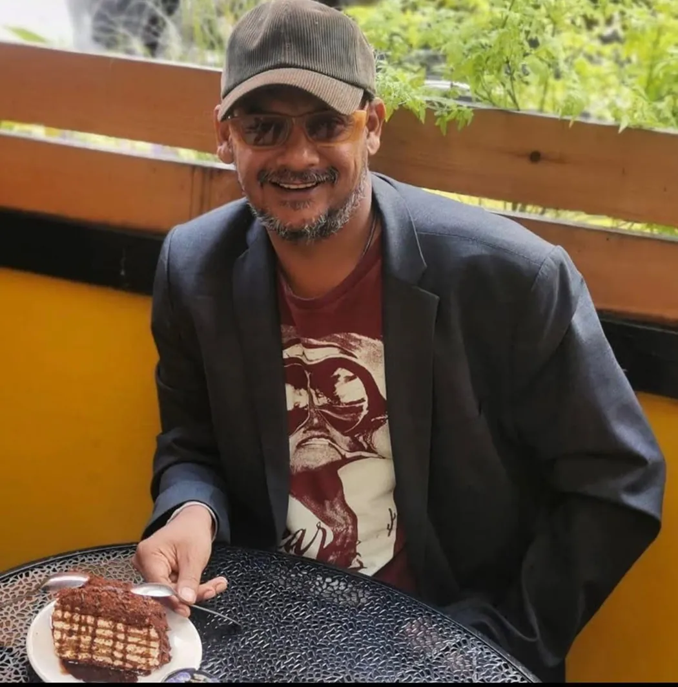
Tridib Nandy at a café
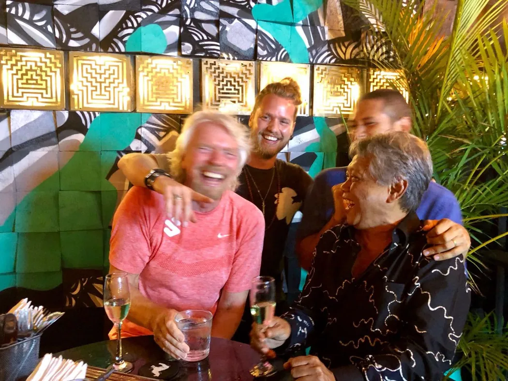
Around the table with Richard BransonAt Bombay Hemp Company
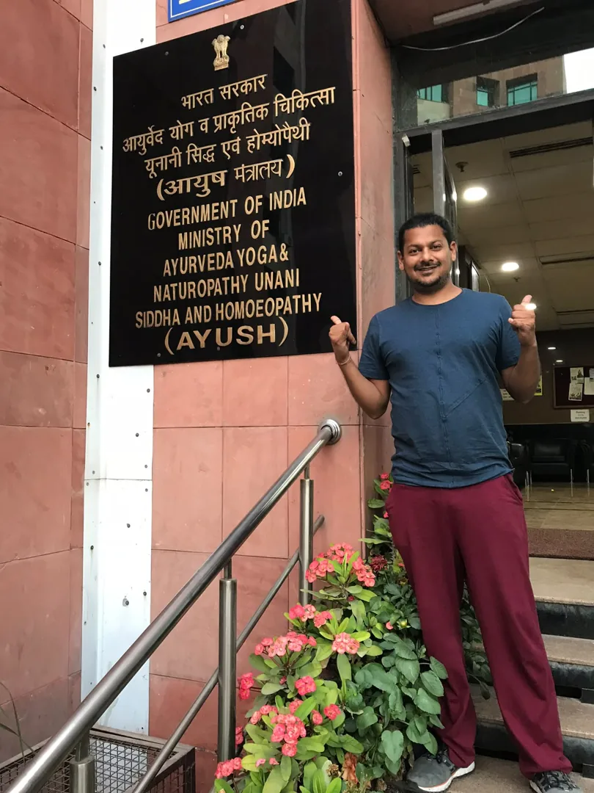
Outside India’s Ministry of AYUSHBhogimaxxingFrom the personal archive
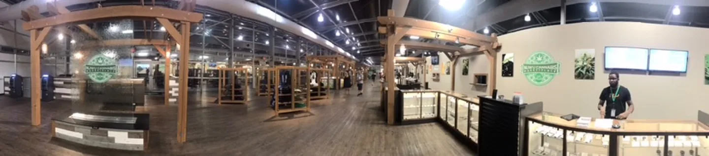
Inside a cannabis marketplace
Autobiographyof aBhogiTRIDIB NANDY
About the book
The title is a nod to Paramahansa Yogananda’s Autobiography of a Yogi. Tridib gives the title a turn of his own. The bhogi is drawn to the world and wants to see what experience can teach him. That impulse runs through the boy at the window and the man who went looking for unfamiliar ideas and people.
The full memoir will appear here as an online book as Tridib develops it.